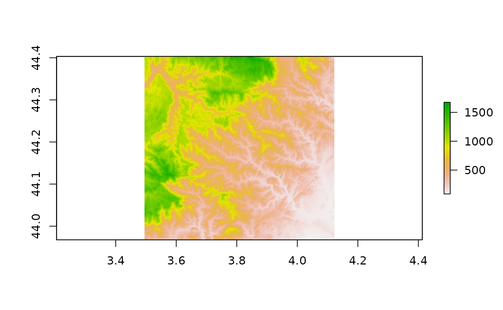
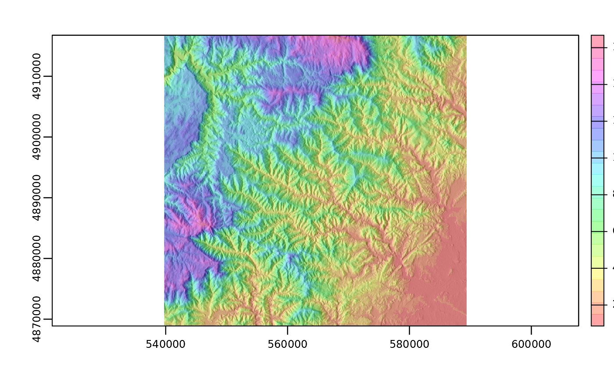
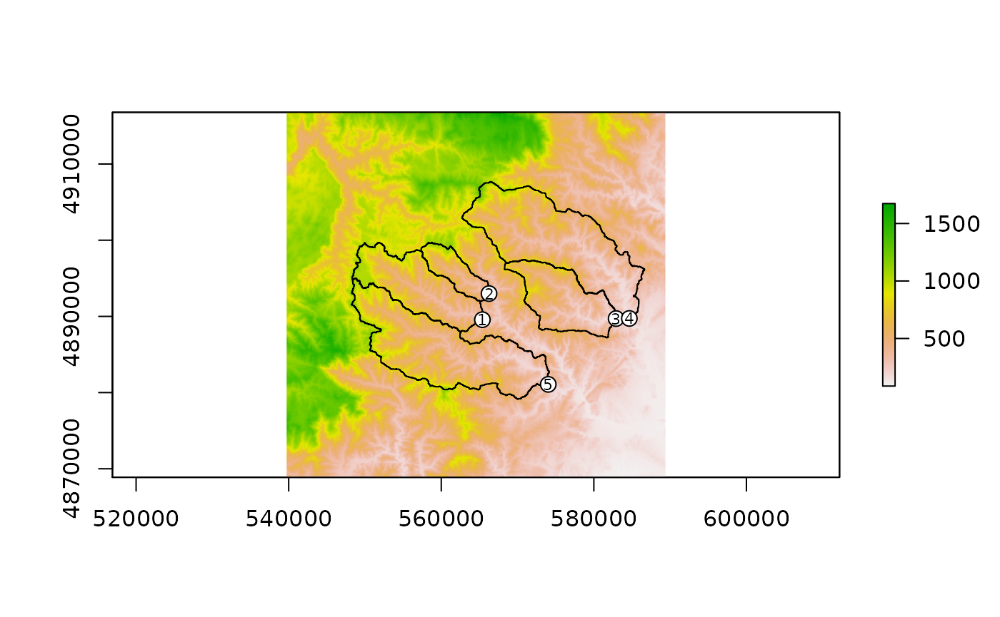
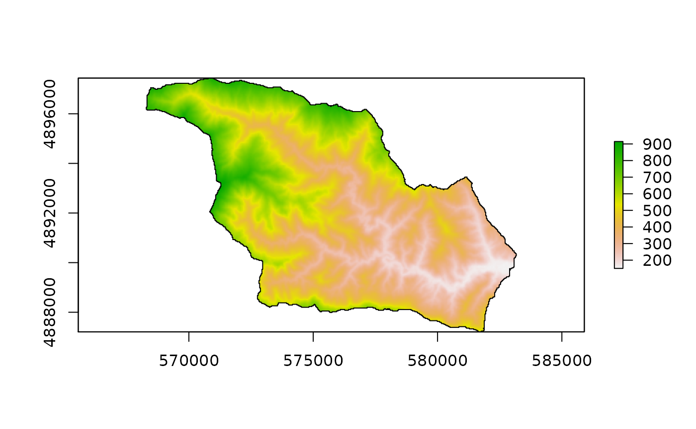
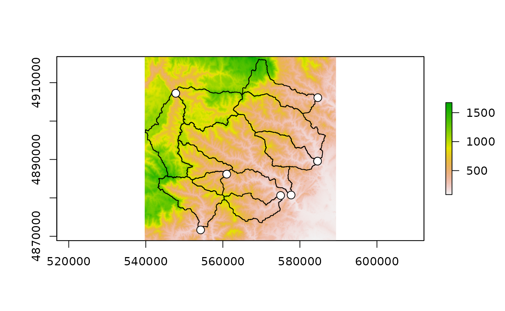
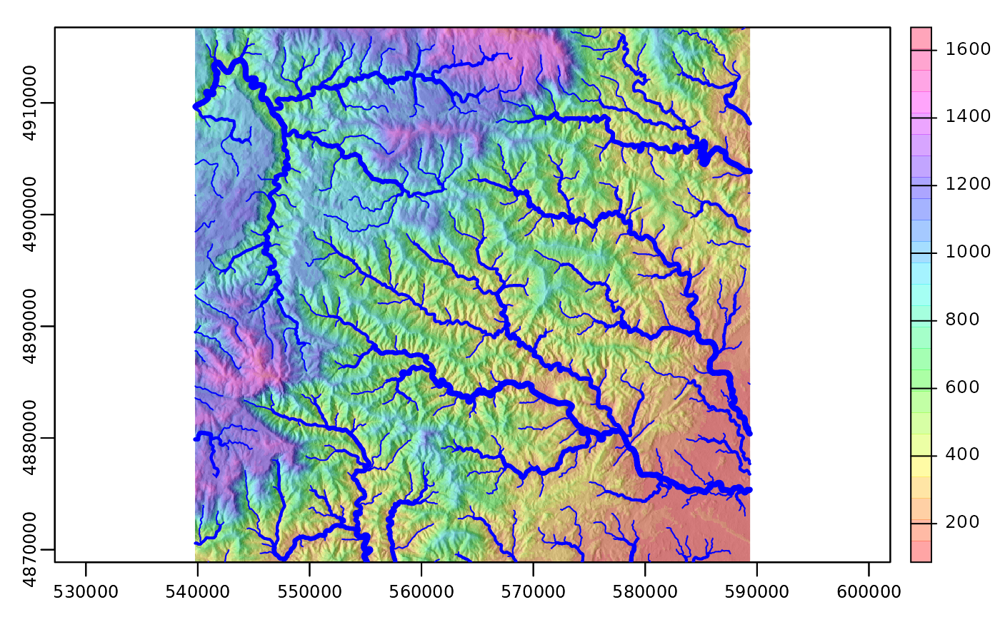
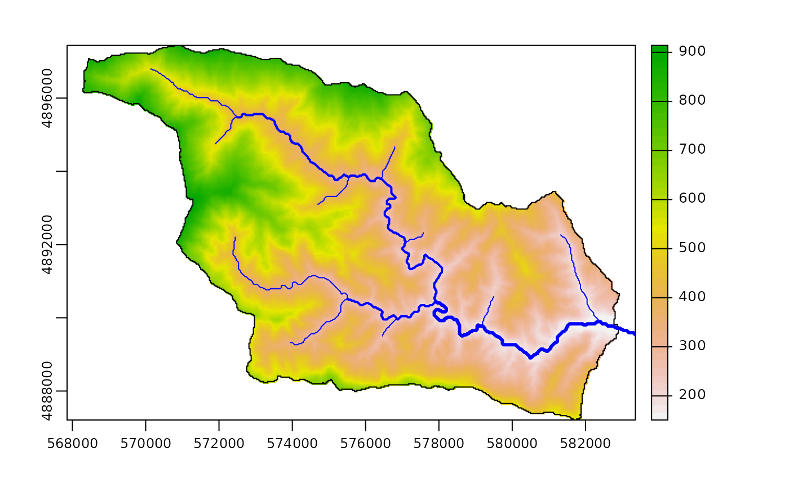
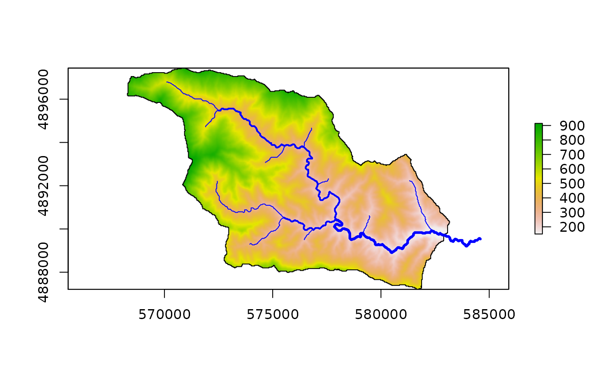

Simple Digital Elevation Model operations
Vincent Godard
2021-11-20
process_dem.RmdObjectives
This tutorial demonstrates the first steps of topographic analysis with the gtbox package.
- getting a Digital Elevation Model into the working environment
- computing various relevant raster layers
- extracting basins
- extracting river profiles
The first thing we have to do is to load the gtbox package (once it has been installed). It is required to have GRASS GIS (version 7) installed, as some of the functions used here will rely heavily on GRASS raster processing modules (through the rgrass7 package). It will also be necessary to install the following Addons (through the command g.extension in a GRASS session) :
r.stream.distancer.stream.basinsr.stream.order
Importing a DEM
The typical workflow consists in reading a Digital Elevation Model (DEM) and computing a number of basic rasters (flow accumulation and direction, etc …) which will be used as a basis for further processing.
We start by reading and plotting a DEM using the. This is a SRTM DEM (1’’) over the Cévennes area in SE France (downloaded from opentopography.org), which is included in the gtbox package. Alternatively we could import a DEM using the raster function of the raster package.
data("dem_cevennes",package = "gtbox")
dem0 = dem_cevennes
rm(dem_cevennes)
#dem0 = raster("srtm_cevennes.tif") # we could import our own DEM this way
plot(dem0)
And here are the properties of this raster.
print(dem0)## class : RasterLayer
## dimensions : 1568, 2258, 3540544 (nrow, ncol, ncell)
## resolution : 0.0002777778, 0.0002777778 (x, y)
## extent : 3.495139, 4.122361, 43.96764, 44.40319 (xmin, xmax, ymin, ymax)
## crs : +proj=longlat +datum=WGS84 +no_defs
## source : /home/vincent/Documents/development/R_packages/gtbox/dev/data/srtm_cevennes.tif
## names : srtm_cevennes
## values : -32768, 32767 (min, max)This raster grid is defined in terms of latitude and longitude over the WGS84 datum, so we first need to project the raster to work with a cartesian grid :
- toward UTM 31N (EPSG: 32631)
- with a 30 m resolution
- using a bilinear interpolation (nearest neighbor interpolation is not optimal for continuous variables)
dem <- projectRaster(dem0, crs="EPSG:32631",res=30,method="bilinear")
dem = trim_na(dem) # we trim to get a nice rectangular DEM with no NA on the sides
plot(dem)
And here are the properties of this raster.
print(dem)## class : RasterLayer
## dimensions : 1597, 1655, 2643035 (nrow, ncol, ncell)
## resolution : 30, 30 (x, y)
## extent : 539727.5, 589377.5, 4868879, 4916789 (xmin, xmax, ymin, ymax)
## crs : +proj=utm +zone=31 +datum=WGS84 +units=m +no_defs
## source : memory
## names : srtm_cevennes
## values : 85.21544, 1673.529 (min, max)Processing the DEM
Then we use the process_dem function to launch an analysis of the DEM and compute various associated rasters. This part of the treatment relies on GRASS GIS, as this function will call some GRASS GIS modules, so we need to explain where to find them on the system with the gisBase argument. The other important argument is the accumulation value (number of pixels) for channel initiation. The output will be organized as a RasterStack, which is a collection of rasters with same extent and resolution.
gisbase = "/usr/lib/grass78/"
th_px = 2000 # stream initiation threshold in pixels
st = process_dem(dem,th_px,gisBase=gisbase)
print(st)## class : RasterStack
## dimensions : 1597, 1655, 2643035, 7 (nrow, ncol, ncell, nlayers)
## resolution : 30, 30 (x, y)
## extent : 539727.5, 589377.5, 4868879, 4916789 (xmin, xmax, ymin, ymax)
## crs : +proj=utm +zone=31 +datum=WGS84 +units=m +no_defs
## names : z, acc, dir, dist, st_id, nxt_id, bs_id
## min values : 85.21544, -689770.00000, -8.00000, 0.00000, 2.00000, 2.00000, 2.00000
## max values : 1673.529, 679069.000, 8.000, 68395.167, 1328.000, 1328.000, 1328.000This stack contains the following rasters (plus eventually some other optional rasters) :
| Raster | Explanation |
|---|---|
| z | Elevation from input DEM |
| acc | Flow accumulation (in pixels) computed with GRASS module r.watershed |
| dir | Flow direction computed with GRASS module r.watershed |
| dist | Distance along network computed with GRASS module r.stream.distance (Addons) |
| st_id | Stream segments unique identifiers (integer) computed with GRASS module r.watershed |
| nxt_id | Stream segment id associated with next pixel following flow direction |
| bs_id | Elementary sub-basins identifiers (integer) corresponding to st_id (r.watershed) |
We can export the stream raster (st_id) for vizualisation purposes in a GIS (e.g. QGIS). We coerce the RasterLayer object stored in the RasterStack into a SpatialGridDataFrame object prior to exporting into a GeoTif raster.
writeGDAL(as(st$st_id, 'SpatialGridDataFrame'),"/tmp/streams.tif")Extracting basins
Now that we have our raster layers computed and neatly organized in the stack, we want to extract some basins to process.
Using user-defined outlets
We can first import some corresponding outlets, which should be positioned on the river network pixels (that’s why we exported the streams.tif raster above).
data("outlets_cevennes",package = "gtbox")
outlets = outlets_cevennes
rm(outlets_cevennes)
#outlets = readOGR("../data/outlets_cevennes.gpkg") # we could import our own outlets this way (EPSG:32631)Once the outlets positions have been imported as SpatialPointsDataFrame object, they can be used to compute the corresponding basins using the get_basins function (it again relies on GRASS modules), which require the flow direction raster (dir) from our RasterStack as an input.
basins = get_basins(st$dir,outlets,gisBase=gisbase)## OGR data source with driver: GPKG
## Source: "/tmp/Rtmp4g9bV0/file4b4226b57a5b/file4b421a22642a/.tmp/vincent-Latitude-5480/410.0.gpkg", layer: "basins"
## with 5 features
## It has 4 fields## class : SpatialPolygonsDataFrame
## features : 5
## extent : 548217.5, 586647.5, 4879139, 4907669 (xmin, xmax, ymin, ymax)
## crs : +proj=utm +zone=31 +datum=WGS84 +units=m +no_defs
## variables : 4
## names : cat, label, field1, field2
## min values : 1, , basin 1, ccc
## max values : 5, , basin 5, zzzWe can then plot these basins and their outlets on a map.

The attribute table of the outlets vector is passed to the new basins vector. We can export the vector to the GeoPackage format for external visualization with QGIS.
We can now select a particular basin (using cat values for example) and subset the RasterStack accordingly.
bas = basins[basins$cat==3,] # get basin of interest
tmp = mask(crop(st,bas),bas) # clip and crop the stack
plot(tmp$z)
lines(bas)
According to their Strahler order
The get_outlets function allows also to define outlets for a given Strahler order.
outlets_sto = get_outlets(st,strahler=3,gisBase=gisbase)
basins_sto = get_basins(st,outlets_sto,gisBase=gisbase)## ATTENTION: 2 features without category were skipped. Features without
## category are written only when -c flag is given.
## OGR data source with driver: GPKG
## Source: "/tmp/Rtmp4g9bV0/file4b42126c7caf/file4b425edc57fc/.tmp/vincent-Latitude-5480/810.0.gpkg", layer: "basins"
## with 12 features
## It has 3 fieldsWe can plot these basins.

Extracting the largest possible basins
Another approach is to try to extract the largest possible basins from the DEM. Note that pixels with negative accumulation, where there is a possible contributions of areas located outside of the DEM, are not considered.
outlets_large = get_outlets(st,large=10e4,gisBase=gisbase) # we specify a minimum area in pixels
basins_large = get_basins(st,outlets_large,gisBase=gisbase)## ATTENTION: 2 features without category were skipped. Features without
## category are written only when -c flag is given.
## OGR data source with driver: GPKG
## Source: "/tmp/Rtmp4g9bV0/file4b4224efbe82/file4b4225a24af2/.tmp/vincent-Latitude-5480/131.0.gpkg", layer: "basins"
## with 7 features
## It has 3 fieldsAnd we plot these basins.
Extracting river network
For the whole network
We use the get_network function to process the RasterStack object.
net = get_network(st,gisBase=gisbase)## ATTENTION: 701 points found, but not requested to be exported. Verify
## 'type' parameter.
## OGR data source with driver: GPKG
## Source: "/tmp/Rtmp4g9bV0/file4b42633e3167/file4b42225dba74/.tmp/vincent-Latitude-5480/509.0.gpkg", layer: "temp"
## with 664 features
## It has 24 fields
plot(st$z)
We obtain a SpatialLinesDataFrame object, which contains the network as well as an attribute table with various information concerning the stream segments (the field stream correspond to st_id of the input RasterStack). We can plot this network, using the Strahler order of the streams segments for width.

writeOGR(net,"/tmp/network.gpkg",layer="network",driver="GPKG",overwrite_layer=TRUE)For a particular basin
We can also extract the network for a particular basin, after cropping and clipping the RasterStack to the contours of this basin.
bas0 = basins[basins$cat==3,] # get basin of interest
st0 = mask(crop(st,bas0),bas0) # clip and crop the stack
ids = unique(st0$st_id) # get the stream ids located in the clipped stack
net0 = net[net$stream%in%ids,] # subset the network according to that
plot(st0$z)
lines(bas)
plot(net0,lwd=net0$strahler,col="blue",add=TRUE)
Extracting river profiles
We can also extract the river profile quite easily. Let’s obtain the largest basin, using the same steps as above.
bas = basins_large[1,] # largest basin
st0 = mask(crop(st,bas),bas) # clip and crop the stack
ids = unique(st0$st_id) # get the stream ids located in the clipped stack
net0 = net[net$stream%in%ids,] # subset the network according to thatWe now identify the stream id corresponding to the stream with the largest accumulation inside the basin. We use the get_streams function to collect all the ids of stream segments moving upstream from this starting point.
id0 = st0$st_id[which.max(st0$acc)]# get id of stream from which we start
ids0 = get_streams(net0,id0,mode="up") # get upstream idsWe now convert the stack as a dataframe, subset to keep only network pixel with ids corresponding to our selection, and ordering according to distance along stream.
stream0 = as.data.frame(st0) # convert to data frame
stream0 = stream0[stream0$st_id%in%ids0,] # select pixel along the profile
stream0 = stream0[order(stream0$dist),] # order
plot(stream0$dist,stream0$z,type="l",lwd=3,xlab="Distance along stream (m)",ylab="Elevation (m)")